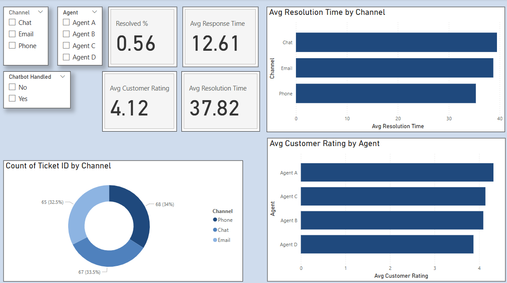

27 quizzes across 9 teams
I built a Power BI dashboard to track how people performed on internal training. Each of nine teams had three quizzes: basic, advanced and final.
I take messy data, from health plan reporting to my own music history, and turn it into something people want to look at.
Next step: Profiled Columns ↓Every dataset gets profiled before anyone builds on it. Here's mine.
A training dashboard I built in a previous BI role at a health plan, and the pattern that changed the quizzes instead of the people.
Requests must be logged within two business days of receipt.
What is the turnaround window for a new request?
fewer people missed those questions once the rewritten versions went in.
I built a Power BI dashboard to track how people performed on internal training. Each of nine teams had three quizzes: basic, advanced and final.
Most wrong answers were scattered across teams, the way you'd expect. A handful of questions were different. Every team missed them at about the same high rate.
When one team struggles, that's a training gap. When every team struggles on the same question, look at the question. I compared those questions with the policy documents they were based on, and the wording didn't match.
I wrote alternative questions for those topics using the policy documents' own language, so the quiz measured whether people knew the policy instead of whether they could decode the question.
When we reviewed the quizzes after the change, people were getting those questions right. The number of people missing them dropped by 90%. The data found the problem, but the fix came from reading the source documents.
A Power Automate flow kept failing to connect to its SharePoint library. I used Copilot to work through the possible causes and found it: the site URL was wrong. Once I corrected the address, the flow connected. Sometimes the messy data is one line of configuration.
Pick a query, then drag the slider to see what the data looked like when it arrived and what it became.
My dashboards in the order I built them, starting with the first one, marked up with what I'd change now.

Automation and web projects that sit next to the dashboards.
An offline flow that checks local JSON datasets for missing and inconsistent values and writes a weekly report. It cut manual verification time by about 80%.
A responsive landing page for a fictional coffee shop, hosted on GitHub Pages.
A branded site for a creative collective focused on conscious storytelling, with ethereal visuals and interactive navigation.
Hand-built and hosted on GitHub Pages, with Google Analytics tracking visits. The code is public, including how each project page is built.
I'm looking for BI and analytics roles where messy data needs someone who'll clean it up and make it make sense. Let's talk.